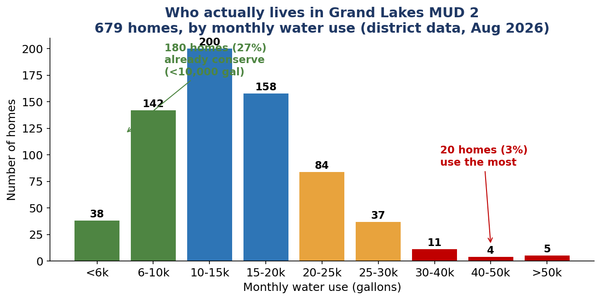
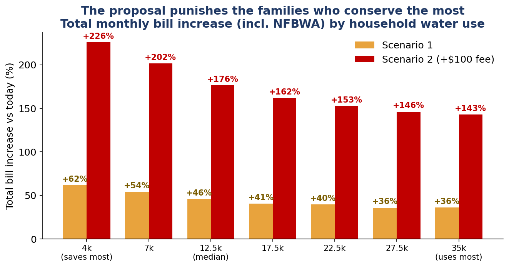
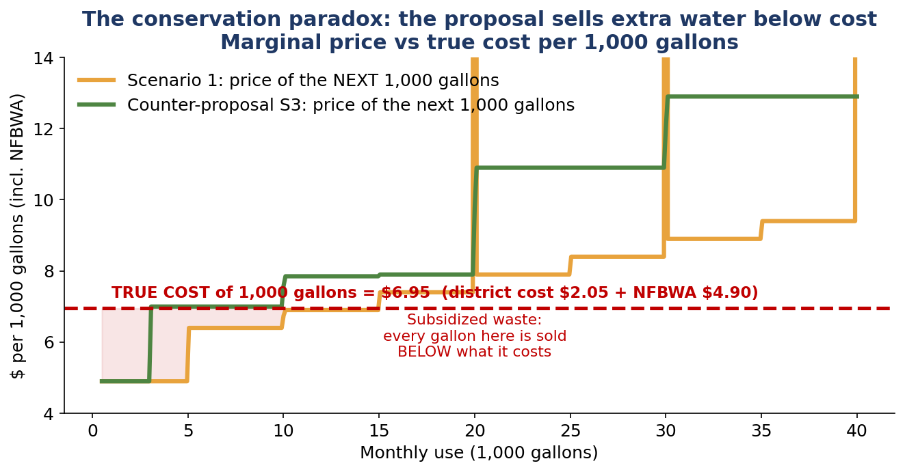
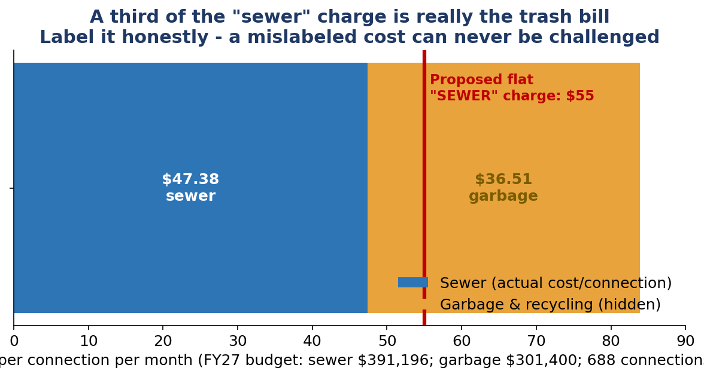
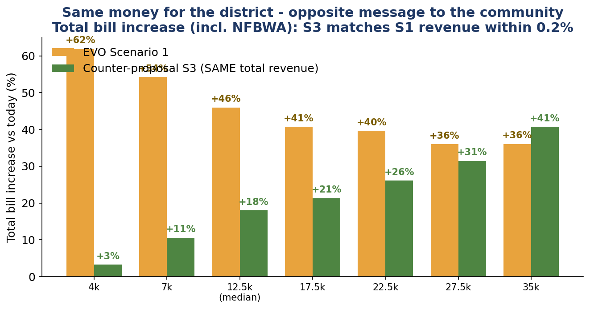

Two rate scenarios were presented at the August 3, 2026 board meeting. A neighbor on Rose Grove Lane checked the math — using the district's own numbers — and built a fairer alternative that raises the same revenue.
2-minute explainer. Sound on — or just read the captions.
All figures are the full monthly water + sewer bill including the NFBWA pass-through fee ($4.90 per 1,000 gallons) that every customer pays — the real check you write. Scenario 2 includes its $100/month Capital Project Base Fee. Computed from the rate tables presented Aug 3, 2026 (handout pp. 4 & 6; the unpublished S1 40–50k water tier is assumed at $4.50) and the counter-proposal in the brief below. S3 also includes a 4.5¢ M&O tax component (~$28/month on the average-value home, scaled to home value) that is not part of the water bill shown here.





The district's stated case: the May 2026 bond election failed, sales-tax (SPA) revenue collapsed, and on current rates its reserves go deeply negative over the next decade. Nobody here disputes that the district needs the money it says it needs — the brief verifies the $950,923 revenue target against the FY2027 budget line by line. The disagreement is about the shape: who carries it, and whether prices reflect measured costs.
Look at the top of your water bill. If it says GRAND LAKES MUD 2, this is your district (neighbors on adjacent streets may be in MUD 1, MUD 4, or the WCID — their rates are set separately).
Scenario 1: water base rises to $30 (includes 5,000 gal) with new tiers, and the flat sewer charge rises from $20 to $55–75 depending on usage. Scenario 2: a steeper water structure, volumetric sewer, plus a flat $100-per-connection monthly "Capital Project Base Fee" — identical for every home regardless of size, value, or usage. The board appeared to lean toward Scenario 1, with a second phase suggested for 2028.
A structure built from measured costs that raises the same total revenue within 0.2%: a low $15 water base, marginal water priced at or above its true $6.95 cost, sewer near its actual $47 connection cost, garbage on its own honest line, commercial rates 25% above Scenario 1, and a modest 4.5¢ tax component — the one lever the presented study never modeled. Every formula is open in the workbook below.
Three things. Read the brief (below) so you know the numbers. Check your own bill with the calculator above. And come to the next board meeting — the board accepts resident comments, and rate design decisions are made there. The ask is modest: publish the cost-of-service measurement and show the community both levers — fees and taxes — side by side, before anything is adopted.
Tomas Alvarez — a resident and ratepayer on Rose Grove Lane since 2021. Everything here comes from public documents: five years of his own bills, the district's published rate order, the FY2027 proposed budget, and the handouts from the August 3 board meeting. And yes — under his own counter-proposal, his bill goes up the most on his street, because the audit found his own sprinkler system was the biggest waster. He proposed it anyway.
The workbook contains every formula: the 60-bill audit, the rate models, the scenario impacts, and the editable S3 counter-proposal calibrated on the district's own 679-meter distribution.